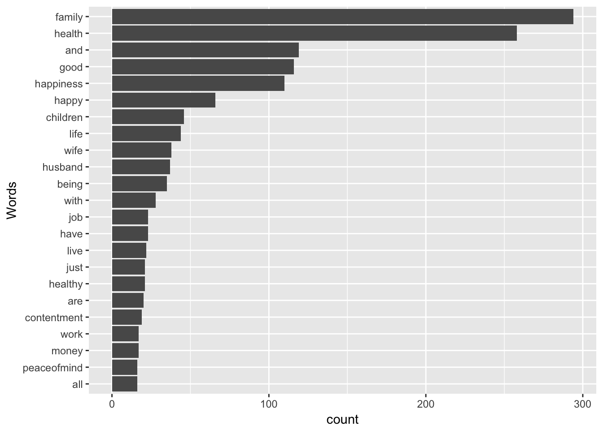
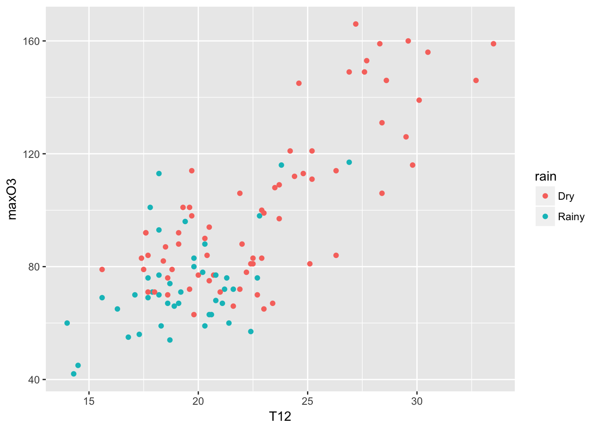

Chapter 5 Graphics
R is known for its amazing high quality graphics. Graphs are crucial to better understand the data, spotlight outliers, help for the modeling part and are of course an incredible tool of communication.

Creating graphics and suggesting the appropriate visualization is not a trivial task and is a field of research. (you can have a look at blogs dedicated to visualizations such as FlowingData to get inspired).
This Anscombe’s quartet example is often used to show that graphs are important since we may be fooled by numbers only. Recent visualization However, as you know, we may also be fooled by graphs.
The original system to make graphics in R is still very much used. The graphics are easy to make and can be customized to a large extent (look at this gallery for a snapshot). However, graphs made with the package ggplot2 are becoming mainstream (some examples). Here Brian Caiffo’s opinion on learning ggplot2 versus base R graphics. We have also to keep in mind that amongst the 11000 packages many are using R base graphics.
Map and spatial data analysis can be obtained with packages such as ggmap (which used Google Maps), maptools, tmap, etc. This is of course a huge field. You can see the task view for a complete list. I would suggest the webpage of Timothée Giraud, a main contributor on this topic as well as this tutorial also gives many references for spatial data.
Colors may be improved using RColorBrewer, ColorBrewer, ColorRamp, ColorRampPalette packages.
Interactives graphics can be obtained for instance with:
- googleVis to interface with google charts (as in this famous this TED talk) Some examples can be found here.
-ggvis
…
One of the latest amazing visualization tools in R are HTML widgets, that we will use! HTML widgets use JavaScript libraries in R in a integrated way to create interactive web visualization such as dynamic maps (leaflet), time-series data charting (dygraphs), and interactive tables (DataTables), interactive plots with plotly, that we will use! Plotly gives the possibility to create interactive D3.js graphs with R. Plots can be shared with a private or public URL and the interactive graphs can be embedded in knitr docs, dashboards, websites, and Shiny Apps. Shiny is of course a great way to share the results.
5.1 Classical plots
Just one piece of advice, avoid pie plots! Look at the help of pie chart (help(pie)):
Pie charts are a very bad way of displaying information. The eye is good at judging linear measures and bad at judging relative areas. A bar chart or dot chart is a preferable way of displaying this type of data
5.1.1 Representing 1 variables
To represent a quantitative variable, histogram and kernel density estimates can be used. To represent the estimate of the target distribution based on the data, the histogram estimates the density if we specify the argument prob = TRUE (equivalent to freq=FALSE) of the hist function.
A kernel density estimate of the variable can be obtained using the density function.
hist(ozone[,"maxO3"], main = "Histogram", probability = TRUE, xlab = "Ozone", col = 4)
lines(density(ozone[,"maxO3"]))
rug(ozone$maxO3)5.1.1.1 Definitions
Assume that the data are modeled as \(n\) independent and identically distributed random variables \((X_1,\ldots,X_n)\) with the same unknown probability distribution \(p_{\star}\) with respect to the Lebesgue measure on \(\mathbb{R}\). A kernel density estimate of \(p_{\star}\) can be introduced using a bandwith \(h\in\mathbb{R}_{+}^{\star}\) and a kernel \(K\) defined on \(\mathbb{R}\) such that \(\int_{\mathbb{R}}K(x)\mathrm{d}x = 1\). The kernel density estimate \(\hat{p}_{n,h}\) is defined by (see Rosenblatt, 1956): \[ \hat{p}_{n,h}: x\mapsto \frac{1}{nh}\sum_{i=1}^{n}K\left(\frac{x-X_i}{h}\right)\,. \] Several kernel functions \(K\) may be used, for instance: \[ \mbox{(Triangular)} \quad K: x\mapsto (1-|x|)\mathbf{1}_{(-1,1)}(x)\,,\\ \mbox{(Epanechikov)} \quad K: x\mapsto \frac{3}{4}(1-x^2)\mathbf{1}_{(-1,1)}(x)\,,\\ \mbox{(Gaussian)} \quad K: x\mapsto (2\pi)^{-1/2}\mathrm{e}^{-x^2/2}\,. \] Minimizing the mean square error of this estimate requires a fair amount of tuning as the bias and the variance of \(\hat{p}_{n,h}\) depend on smoothness assumptions on \(p_{\star}\), on the choice of \(h\) as a function of \(n\), and on the properties of \(K\) (moments assumptions for instance).
Histogram estimates offer an alternative for the graphical representation of the density \(p_{\star}\). Assume for instance that \(p_{\star}\) is defined on \([0,1)\) and let \((C_1,\ldots,C_m)\) be a partition of \([0,1)\) (a common choice is given by \(C_i=[\frac{i-1}{m},\frac{i}{m})\) for \(1\le i \le m\)). The histogram estimate associated with this partition is defined as follows, with \(h=1/m\): \[ \widetilde{p}_{n,h}: x\mapsto \frac{1}{nh}\sum_{i=1}^{n}\sum_{j=1}^{m}\mathbf{1}_{C_j}(X_i)\mathbf{1}_{C_j}(x) = \frac{1}{h}\sum_{j=1}^{m}\left(\frac{1}{n}\sum_{i=1}^{n}\mathbf{1}_{C_j}(X_i)\right)\mathbf{1}_{C_j}(x)\,. \] In this setting, minimizing the mean square error of \(\widetilde{p}_{n,h}\) requires a sharp choice of \(m\) as a function of \(n\).
Look at the help of the function to see the different options such as the number of intervals.
hist(ozone[,"maxO3"],main="Histogram", probability = TRUE, xlab = "Ozone", col = "lightblue", breaks = 30)
abline(v = median(ozone[,"maxO3"]), lwd = 4, col = "darkblue")# abline (h = ) draw an horizontal lineThe breaks argument allows to specify the cells to be displayed in the histogram, i.e. the \(C_j\)’s in the definition of \(\widetilde{p}_{n,h}\). This argument may be given as a number or a vector providing explicitly the coordinates of the breakpoints for instance.
Other arguments may be used to get fancy histograms such as col (defined as a string) to choose the color used to fill each cell.
The function hist() returns a list of components wich can be used to monitor precisely the histogram or modify the way it is displayed.
To represent the distribution of a qualitative variable, we use a bar chart, obtained using the barplot function. We must count the number of occurrences at each level using the table function. For the factor wind:
barplot(table(ozone[, "wind"]))It is also possible to use the plot function directly on the vector of the categories:
r plot(ozone[, "wind"]) The function plots according to the type of variable and selects the appropriate representations.
5.1.2 Reprensenting 2 variables
Let us start by representing two quantitative variables: maximum ozone according to temperature at 9am:
plot(maxO3 ~ T9, data = ozone) Note that it is also possible to write
plot(ozone[,"T9"], ozone[,"maxO3"]) but in statistic, we prefer the version with a formulae plot(y~x, data = mydata) “y explained by x”.
Similarly, to represent a quantitative variable maxO3 according to a qualitative variable wind:
plot(maxO3 ~ wind, data = ozone)In this case, the plot function automatically yields a boxplot for each category of the variable wind. The boxes are the interquartile range (IQR). The horizontal line is the sample median. The wiskers correspond to the largest (smallest) observation that is no more than 1.5 times the IQR away from the upper (lower) quartile. Any points that not are inside the whiskers are plotted as a point. The variable wind has an effect on the ozone: the easterly wind seems to be associated with high concentrations of ozone. This graph can also be obtained using the boxplot function.
Individuals above the higher whisker are often considered to be outliers. The component out from the ouput list of the boxplot function gives us the outliers’ values.
names(res)## [1] "stats" "n" "conf" "out" "group" "names"outliers <- res$out
outliers## [1] 45 153 159 145 149 149 156 131 166To identify the individuals we can use the operator {%in%} which outputs TRUE or FALSE depending on whether or not the value is within the set.
ind_out <- which(ozone[,"maxO3"]%in%outliers)
ind_out## [1] 17 40 52 53 54 55 57 78 79 80#ozone[ind_out, "maxO3"]Individuals ind_out are therefore the outliers. Another way of identifying these outliers is to use the identify function. By clicking on a point on a graph, the function yields the row number corresponding to this individual. The identify function takes the abscissa and ordinate values from the scatter plot as the arguments:
identify(ozone$wind,ozone$maxO3)When you have finished, simply click elsewhere in the graph window with the right button of the mouse, or type Esc in the command window.
We can also represent two qualitative variables using a bar chart. For example:
plot(rain ~ wind, data = ozone)can be used to obtain, for each category of the explanatory factor (here wind), the relative frequencies for each category of the response factor rain. The width of the bar is proportional to the frequency of the category of the explanatory factor (here wind). This graph can also be obtained using the spineplot function. We find that the weather type``rain’’ is proportionally greater when the wind blows from the west. Furthermore, as this is the widest bar, we can also conclude that this is the most common wind direction in Rennes.
Finally, the function pairs can be used to draw all of the bivariate plots:
pairs(ozone[, 1:5])Let’s represent the daily ozone evolution for the first week.
plot(ozone[1:7,"maxO3"],type="l", ylab = "Max O3", main = "1 week of ozone")
This is a very classical graph for representing temporal data.
To compare, for example, the evolution of maximum ozone levels over two different weeks, we can proceed as follows:
plot(ozone[1:7,"maxO3"],type="l")
lines(ozone[8:14,"maxO3"],col="grey50") # add lines (2nd week)The graph does not show the sixth and sewindh observations for this second week since the graph window is scaled when the plot function is used (and is not rescaled after the use of lines). Consequently, ylim options may be specified as follows:

There are a bunch of graphics options for plots. See ?plot.default and ?par.
Days to days one are the following:
* main (title), sub (subtitle), xlab, ylab (axes labels)
* type: n (none), p (points - default), l (join points by line), b (both points and lines), h (vertical bar), “o” (points and lines overlaid) * pch: shape of points (between 0 and 25, 0 point, 2 triangle, 3 cross, etc)
* cex: size of the symbol (par défaut 1, \(>1\) blow-up, \(<1\) decrease), cex.main, cex.axis
* lty: (line type) 1 plain, 2 dashed, 3 dotted * xlim: xlim = c(0,300) - ylim
* axes: draw axes (TRUE ou FALSE)
* par(mfrow=c(n,p)) to open a graphical panel with \(n\) rows and \(p columns\)
### Adding information on a graph
There are many ways to add other information to get deeper into the comprehension of the data and highlight some features. We can add variables, texts, colors, etc…
It is possible to add another variable simply by using colors and coloring according to the categories of a categorical variable for instance.
plot(maxO3~T9,col=as.integer(ozone$wind), data = ozone, cex = 0.8)
legend("topleft",levels(ozone[,"wind"]),
fil=1:nlevels(ozone[,"wind"]))Let’s represent the ozone maxima according to temperature T12 and add the date and the information on rain/not rain. To make the date appear we need to add text to the scatterplot. Nonetheless, in order to avoid overlapping the symbols (the small circles) and the names, we do not draw any symbols (type=“n”). We simply write the month and the day (i.e. the last four characters of the row names) with a reduced font size (cex=.5). Thew, we will the coordinates of rainy days and add red dots.
selection <- ozone[,"rain"]=="Rainy"
plot(maxO3~T12,data=ozone,type="n")
text(ozone[,"T12"],ozone[,"maxO3"],substr(rownames(ozone),5,8), cex=.5, pos = 3)
points(ozone[selection,"T12"],ozone[selection,"maxO3"], pch=21,bg="red",cex=.5)5.1.3 Saving graphical outputs
Graphs can be saved in any common format (png, jpeg, pdf, svg) either by clicking on save as or by using:
pdf("myplot.pdf")
plot(..)
dev.off()5.2 Ggplot2
ggplot2 is an implementation by Hadley Wickam (a key and popular personage in the R community) of Wilkinson’s Grammar of graphics which defines what a statistical graphic is. Many information can be found at ggplot website but for a quick summary look at these two pages Cheat Sheet. A complete book that you can buy is also available but this online (free) book could be useful to start.
“The grammar tells us the statistical graphic is mapping from data to aesthetic attributes (color, shape and size) of geometric objects (points, lines, and bars). The plot may also contain statistical transformations of the data and is drawn on a specific coordinate system.”
library(ggplot2)Let’s start with the qplot function (quick plot) which is the counterpart of the plot function with many built-in features. You can have a look at some examples with the command ‘example(qplot)’.
qplot(T12, maxO3, data = ozone, color = rain)
For completeness, I put many capabilities of the qplot function, but to go deeper into ggplot2, we should use its own specific syntax where plots are built with layers.
qplot(T12, maxO3, data = ozone, geom = c("point", "smooth"))
qplot(maxO3, data = ozone, fill = rain)
qplot(maxO3, data = ozone, geom = "density", color = wind)
qplot(T12, maxO3, data = ozone, facets = .~wind)
qplot(maxO3, data = ozone, facets = rain~.)
qplot(T12, maxO3, data = ozone, color = rain) + geom_smooth(method= "lm")A ggplot is build with independent elements that form the grammar: * data (ggplot): a data frame * aesthetics (aes): variables to represent (color, size, fill) * geometrics (geom): graphical representation * statistics (stat): statistical treatment
We use ggplot to specify the dataset used as well as the aesthetics, i.e. the variables to display with their mapping. Once this is done, one can add a geometry to obtain the plot. If you want to color the points, it is just a matter of adding this to the aesthetic list.
ggplot(data = ozone, aes(x = wind)) + geom_bar()ggplot(data = ozone, aes(x = wind, fill = wind)) + geom_bar()ggplot(data = ozone, aes(x = wind, fill = rain)) + geom_bar() + coord_flip() + labs(fill = "Rain") This latter option ‘coord_flip’ flips the Cartesian coordinates. It is very useful when we have labels that are not nicely displayed in the x-axis.
A stacked bar chart is the default type produced by ggplot2. The plot of the counts for each combination of categories side by side can be displayed with by assigning a value of “dodge” to the position argument of geom_bar:
ggplot(data = ozone, aes(x = wind, fill = rain)) + geom_bar(position = "dodge") 
For an histogram, there are no obvious bin numbers (in comparison to barplots), this parameter need to be specified:
ggplot(data = ozone, aes(x = T15)) + geom_histogram(bins = 30)Lots of arguments can be tuned to modify the default graphs produced by geom_histogram(). The default number of cells is \(30\), it may be chosen using the argument bins. The argument binwidth, which sets the width of each cell, provides another way to change the generic display of geom_histogram().
Lines styles are modified with the arguments color and linetype, the cells color is set with fill.
ggplot(ozone, aes(maxO3)) + geom_density(aes(color=wind))A kernel density estimate such as \(\hat{p}_{n,h}\) is obtained with geom_density(). The two main arguments that have to be chosen are kernel to select the kernel function \(K\) in the definition of \(\hat{p}_{n,h}\) and bw to define the bandwith \(h\).
5.2.1 Scatter plots
In this family of plot, we are looking at the value of one variable with respect to another.
mygplot <- ggplot(ozone, aes(T12, maxO3))
summary(mygplot)## data: maxO3, T9, T12, T15, Ne9, Ne12, Ne15, Wx9, Wx12, Wx15,
## maxO3y, wind, rain [112x13]
## mapping: x = T12, y = maxO3
## faceting: <ggproto object: Class FacetNull, Facet>
## compute_layout: function
## draw_back: function
## draw_front: function
## draw_labels: function
## draw_panels: function
## finish_data: function
## init_scales: function
## map: function
## map_data: function
## params: list
## render_back: function
## render_front: function
## render_panels: function
## setup_data: function
## setup_params: function
## shrink: TRUE
## train: function
## train_positions: function
## train_scales: function
## vars: function
## super: <ggproto object: Class FacetNull, Facet>mygplot <- mygplot + geom_point()
print(mygplot)mygplot + geom_point(aes(color = wind))The roles of the two are symmetric, except when a smoother is used. A smoother (lowess) allows to see the overall trend in the data set. A 95% confidence intervals for that line are indicated by the gray zone.
mygplot + geom_smooth(method = "loess") + labs(title = "MaxO3 versus T12", x = "Temperature at noon", y = "Pollutant")ggplot(ozone, aes(T12, maxO3)) + geom_point(aes(color = rain)) + geom_smooth(aes(color = rain), method = "lm") 5.2.2 facets
Another powerful feature of ggplot2 are called facets (panels). The idea is to represent a plot for each category of a factor (as an alternative to color each points according to its category). To do so, you need to specify the facets variable. The format is a variable on the left-hand side (indicating the number of rows), a tilde and a variable on the right-hand side (indicating the number of columns). A dot is used if you do not have rows or colomns. The idea is that one can facet a given graph in a multiplicity of small graphs.
mygplot + facet_grid(.~wind)5.2.3 more options
Then of course, there are many options and functions that can be used. You can specify the background colors with the theme function, the position of the legend, etc. Here some examples:
mygplot + geom_point(color = "steelblue", size = 4, alpha = 1/2)The color is steel blue, the size of the points is increased to be 4 (the default is 1) and the alpha is the transparency set to be one half rather than solid.
ggplot(mpg, aes(displ, hwy)) + geom_point() + geom_smooth(linetype = 3, size = 3, method = "lm", se = FALSE)5.3 First interactive graphs
Let’s download plotly!
library(plotly)##
## Attaching package: 'plotly'## The following object is masked from 'package:ggplot2':
##
## last_plot## The following object is masked from 'package:stats':
##
## filter## The following object is masked from 'package:graphics':
##
## layoutmyinterplot <- ggplot(ozone, aes(T12, maxO3)) + geom_point(aes(text = paste("wind:", wind)), size = 0.8) + geom_smooth(method = "lm", aes(color=rain)) + facet_wrap(~rain)## Warning: Ignoring unknown aesthetics: textggplotly(myinterplot)## We recommend that you use the dev version of ggplot2 with `ggplotly()`
## Install it with: `devtools::install_github('hadley/ggplot2')`bb <- ggplot(ozone, aes (T12, maxO3)) + geom_point(aes(color = Ne12))
ggplotly(bb)## We recommend that you use the dev version of ggplot2 with `ggplotly()`
## Install it with: `devtools::install_github('hadley/ggplot2')`ggplot(ozone, aes(wind, maxO3)) + geom_boxplot()ggplotly()## We recommend that you use the dev version of ggplot2 with `ggplotly()`
## Install it with: `devtools::install_github('hadley/ggplot2')`One of my favourite to finish!
library(dygraphs)
library(xts)## Loading required package: zoo##
## Attaching package: 'zoo'## The following objects are masked from 'package:base':
##
## as.Date, as.Date.numericdates <- as.Date(rownames(ozone), "%Y%m%d")
aa= cbind.data.frame(dates,ozone[, "maxO3"])
myobj <- as.xts(aa[,2], order.by = aa[,1])
res <- dygraph(myobj, main = "Ozone Concentartion")
dyRangeSelector(res, dateWindow = c("2001-06-01", "2001-09-30"))5.4 Spatial graphs
We will just show that you can create maps in R. It requires a bit of new command and packages but it will give you some hints about how to proceed to do such maps.
library(maps)##
## Attaching package: 'maps'## The following object is masked _by_ '.GlobalEnv':
##
## ozonelibrary(ggplot2)
help(map_data)
# This first example is given in map_data
states <- map_data("state")
?USArrests # You have a data set with Murder/100000 habs in US states
arrests <- USArrests
names(arrests) <- tolower(names(arrests))
arrests$region <- tolower(rownames(USArrests))
choro <- merge(states, arrests, sort = FALSE, by = "region")
choro <- choro[order(choro$order), ]
ggplot(choro, aes(long, lat)) +
geom_polygon(aes(group = group, fill = assault)) +
coord_map("albers", at0 = 45.5, lat1 = 29.5)Another a bit more complicated example (Credit C. Sabbati):
r CountyGrid<-map_data("county") StateGrid<-map_data("state") head(CountyGrid)
## long lat group order region subregion ## 1 -86.50517 32.34920 1 1 alabama autauga ## 2 -86.53382 32.35493 1 2 alabama autauga ## 3 -86.54527 32.36639 1 3 alabama autauga ## 4 -86.55673 32.37785 1 4 alabama autauga ## 5 -86.57966 32.38357 1 5 alabama autauga ## 6 -86.59111 32.37785 1 6 alabama autauga
r CountyGrid$state<-CountyGrid$region CountyGrid$county<-CountyGrid$subregion data<-read.table(file="data/NewIncomeData.csv",sep=",",header=T) DataToMap<-merge(CountyGrid,data,by=c("state","county")) DataToMap<-DataToMap[order(DataToMap$order),] DataToMap$percapita<-(DataToMap$Wages_Salaries+DataToMap$Dividends)/DataToMap$Return_Num DataToMap$percapita.d<-cut(DataToMap$percapita, breaks=c(seq(15,55,10),87.02)) data_source = ggplot(DataToMap, aes(long, lat, group = group)) # this is where the data lives county_polygons = geom_polygon(aes(fill = percapita.d), colour = alpha("white", 1/2), size = 0.2) # add in the polygons in the data, filled by the attribute precapita state_boundaries = geom_polygon(data = StateGrid, colour = "white", fill = NA) # add in the state boundaries from state_df color_mapper = scale_fill_brewer("PerCapita Wages", palette = "PuRd") # how do we fill polygons in this plot? income_plot = (data_source + county_polygons + state_boundaries + color_mapper) print(income_plot)
r #non cartogram view attach(data) par(las=2,mar=c(7, 4, 4, 2)) plot(state,(Wages_Salaries+Dividends)/Return_Num)
Finally with interaction:
library(plotly)
df <- read.csv("https://raw.githubusercontent.com/plotly/datasets/master/2011_us_ag_exports.csv")
df$hover <- with(df, paste(state, '<br>', "Beef", beef, "Dairy", dairy, "<br>",
"Fruits", total.fruits, "Veggies", total.veggies,
"<br>", "Wheat", wheat, "Corn", corn))
# give state boundaries a white border
l <- list(color = toRGB("white"), width = 2)
# specify some map projection/options
g <- list(
scope = 'usa',
projection = list(type = 'albers usa'),
showlakes = TRUE,
lakecolor = toRGB('white')
)
attach(df)## The following object is masked from data:
##
## stateaa <- plot_ly(df, z = total.exports, text = hover, locations = code, type = 'choropleth',
locationmode = 'USA-states', color = total.exports, colors = 'Purples',
marker = list(line = l), colorbar = list(title = "Millions USD"))
layout(aa, title = '2011 US Agriculture Exports by State', geo = g)It is also possible to create animated images!
5.5 Going further
5.5.1 Cross-validation
Assume that the data are modeled as \(n\) independent and identically distributed random variables \((X_1,\ldots,X_n)\) with the same unknown probability distribution \(p_{\star}\) with respect to the Lebesgue measure on \(\mathbb{R}\). A kernel density estimate of \(p_{\star}\) with bandwith \(h_n\in\mathbb{R}_{+}^{\star}\) and kernel \(K:\mathbb{R}\to \mathbb{R}\) is given by: \[ \hat{p}_{n,h_n}: x\mapsto \frac{1}{nh_n}\sum_{i=1}^{n}K\left(\frac{x-X_i}{h_n}\right)\,. \] The performance of this estimator is highly sensitive to the choice of the bandwith \(h_n\). For instance, in the case where \(p_{\star}\) is twice continuously differentiable with \(p_{\star}\) and \(p''_{\star}\) uniformly bounded and when \(K\) is such that \(\int K(u) \mathrm{d}u = 1\), \(\int uK(u) \mathrm{d}u = 0\), \(\int u^2|K(u) |\mathrm{d}u <\infty\) and \(\int |K(u)|^2 \mathrm{d}u <\infty\), there exists \(c>0\) such that for all \(x\in\mathbb{R}\): \[ \left|\mathbb{E}\left[\hat{p}_{n,h_n}(x)\right] - p_{\star}(x)\right|\le ch_n^2\quad\mbox{and}\quad \mathbb{V}\left[\hat{p}_{n,h_n}(x)\right] \le \frac{c}{nh_n}\,. \] Therefore, in this case, minimizing the mean square error leads to set \(h_n \propto n^{-1/5}\). However, this optimal choice depends on the smoothness assumptions on the unknown density \(p_{\star}\) (through the constant \(c\)) which makes them useless in practice. Other assumptions on \(p_{\star}\) (Lipschitz, local Hölder continuity of a given order) provide other rates of convergence but with no practical rules to choose \(h_n\).
A common strategy to obtain a data driven choice of \(h_n\) is to minimize the integrated mean square error: \[ h_n = \mbox{Argmin}_{h>0} \; \mathbb{E}\left[\ \int \left(\hat{p}_{n,h}(x)-p_{\star}(x)\right)^2 \mathrm{d}x\right]\,. \] This amounts to computing: \[ h_n = \mbox{Argmin}_{h>0} \; \mathsf{I}_n(h) = \mathbb{E}\left[\int \left(\hat{p}_{n,h}(x)\right)^2\mathrm{d}x - 2 \int \hat{p}_{n,h}(x)p_{\star}(x) \mathrm{d}x\right]\,. \] The function \(h\mapsto \mathsf{I}_n(h)\) cannot be minimized as it depends on the unknown density \(p_{\star}\). Therefore, Cross-validation minimizes an empirical surrogate criterion to define \(\hat{h}_n\): \[ \hat{h}_n = \mbox{Argmin}_{h>0} \; \mathsf{\hat{I}}_n(h) = \int\left(\hat{p}_{n,h}(x)\right)^2\mathrm{d}x - \frac{2}{n}\sum_{i=1}^n\left(\frac{1}{(n-1)h}\sum_{j=1,j\neq i}^n K\left(\frac{X_j-X_i}{h}\right)\right)\,. \] For all \(h>0\), \(\mathsf{\hat{I}}_n(h)\) is an unbiased estimator of \(\mathsf{I}_n(h)\). It can be computed explicitly from the observations as long as \(\int\left(\hat{p}_{n,h}(x)\right)^2\mathrm{d}x\) is available which is straightforward for usual kernel choices.
The following function computes the best \(h\) on a given grid when \(K\) is a Gaussian kernel \(K:x\mapsto (2\pi)^{-1/2}\mathrm{e}^{-x^2/2}\).